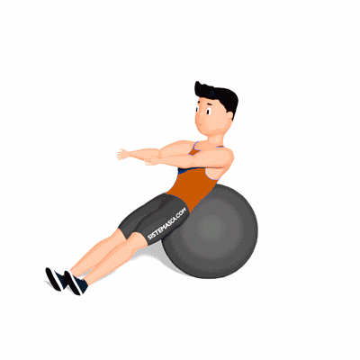

Extensão e Flexão do Tronco na Bola Suíça

O exercício tem como objetivo fortalecer e alongar a região da coluna.
Ficha Técnica
Tipo: Funcional
Grupo Muscular: Costas
Aparelho: Nenhum
Músculos: Nenhum
Como realizar
- Estenda as costas totalmente sobre a bola suíça e estenda os braços acima da cabeça;
- Em seguida, flexione o tronco e leve os braços estendidos a frente do corpo;
- Retorne a posição inicial lentamente e repita os movimentos pela quantidade de vezes orientada pelo professor(a).
 RC STORE
RC STORE